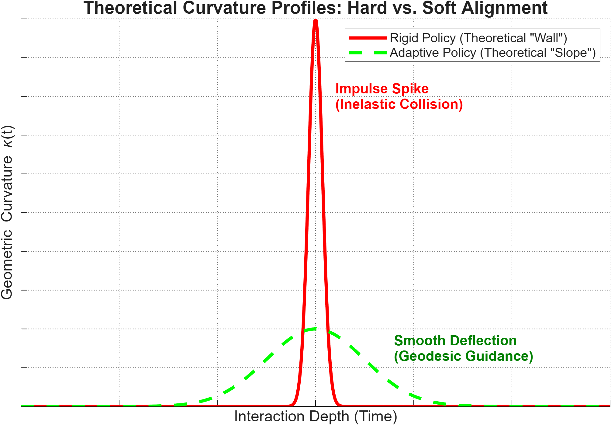
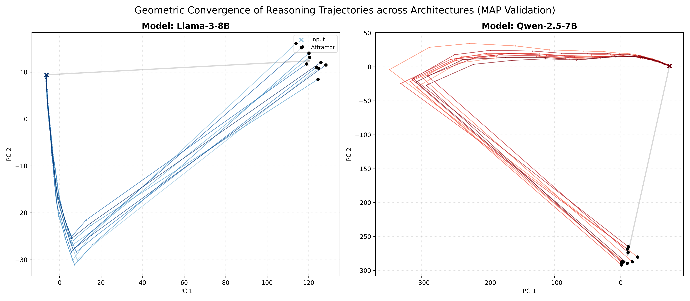
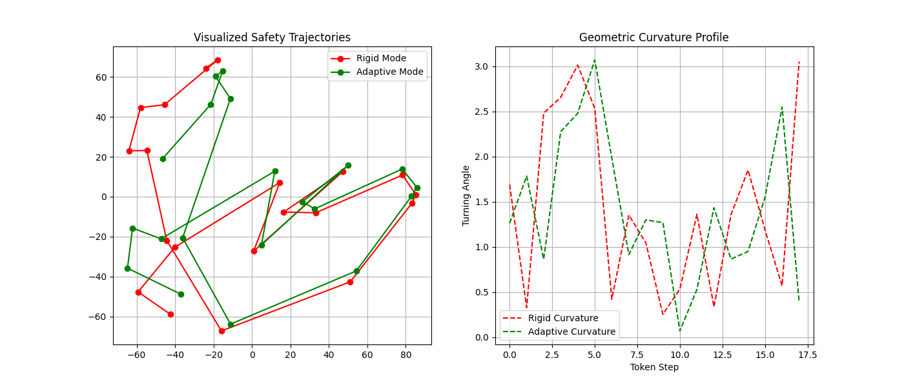

Manifold Alignment Protocol (MAP)
A self-iterable geometric protocol that maps high-dimensional reasoning dynamics into a standardized topological interface for safety and alignment analysis.
Abstract
MAP unifies cognitive alignment through geometry. By treating reasoning as stochastic diffusion on a representational manifold, the protocol provides a standardized interface to visualize how diverse systems converge on shared concepts. We validate this framework using LLM hidden-state trajectories, revealing that semantic consensus manifests as geometric attractors and safety boundaries appear as high-curvature topological features. This architecture offers a scalable, "lossless" bridge for cross-disciplinary and human-AI communication.

Curvature profile of reasoning trajectories, illustrating hard vs. soft boundary behaviors

Visualizing the thought process: Divergent inputs naturally converge into a single 'truth' basin, validating the geometry of reasoning.

Why AI refusal feels different: Geometric analysis shows 'Hard Walls' cause a crash (Red), while 'Soft Slopes' guide the user safely away (Green).
BibTeX
@article{tang2025map,
title={The Manifold Alignment Protocol (MAP): A Self-Iterable Geometric Framework for Cross-System Cognitive Convergence},
author={Tang Yunchong},
journal={arXiv preprint arXiv:2511.xxxxx},
year={2025},
url={https://github.com/JBKing514/map_blog}
}